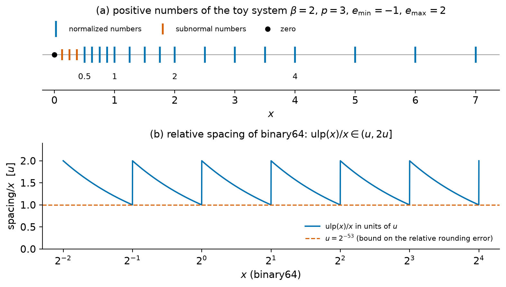
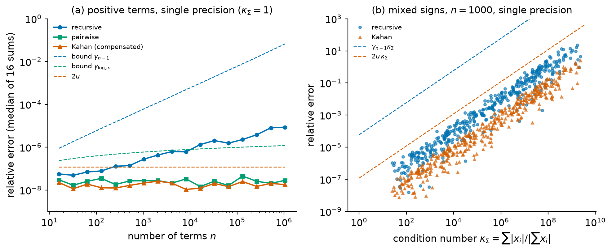
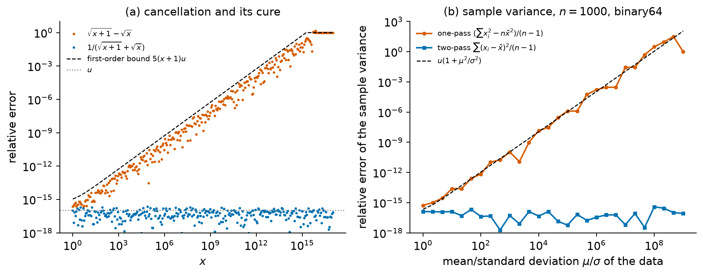
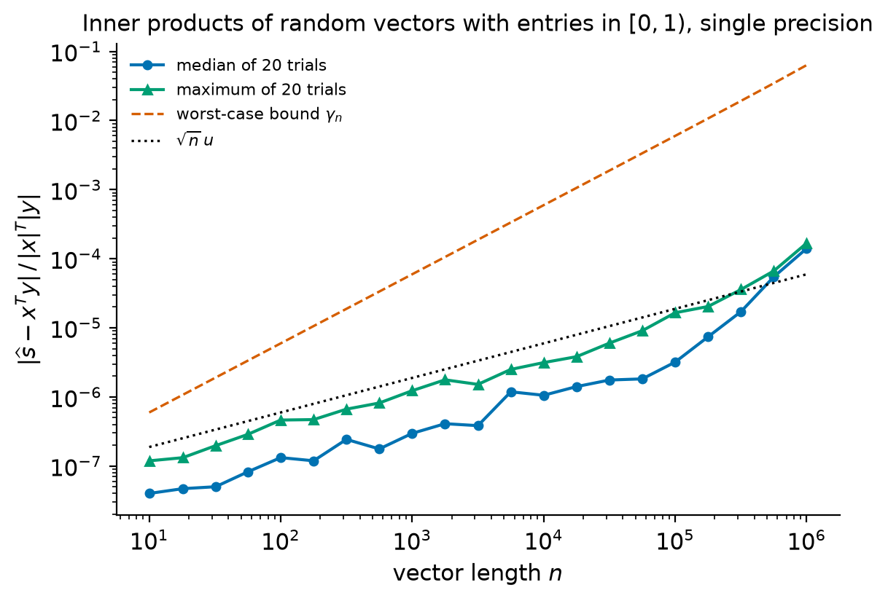

3. Floating-point arithmetic#
Every algorithm in this course is executed on numbers that carry a fixed, finite number of binary digits. The real number \(0.1\) cannot be stored exactly, \((a+b)+c\) need not equal \(a+(b+c)\), and an innocent-looking formula such as \(\sqrt{x+1}-\sqrt{x}\) can return a result with no correct digits. None of this makes computing unreliable. The arithmetic of modern computers is specified precisely by the IEEE 754 standard [IEEE, 2019], and from that specification one can prove rigorous bounds on the errors of computations, as we shall do for sums, inner products and matrix products.
This chapter builds the model of floating-point arithmetic used for every error analysis in the rest of the course. We first describe the set of floating-point numbers and the rules for rounding a real number into it, then state and prove the basic error bound \(\fl(x) = x(1+\delta)\), \(|\delta|\le u\), and derive from it the standard model of arithmetic. The remaining sections apply the model: we analyze summation algorithms, prove the bound \(|\widehat C - AB|\le\gamma_n|A||B|\) that the lab of Chapter 1 used, and study cancellation, overflow and underflow, the three ways in which floating-point computations most often go wrong in practice. Chapter 4 then combines these tools with the notions of conditioning and backward stability.
Throughout the chapter we keep a strict distinction between exact and computed quantities. A letter such as \(s\) denotes an exact real number, a hat as in \(\widehat s\) denotes the number actually produced by a computation in floating-point arithmetic, and \(\fl(\cdot)\) denotes the result of evaluating an expression in floating-point arithmetic in a specified order.
Learning objectives
After working through this chapter you should be able to:
describe a floating-point number system by its base, precision and exponent range, and give the parameters of the IEEE binary64, binary32, binary16 and bfloat16 formats;
explain normalized and subnormal numbers, the hidden bit, the spacing of floating-point numbers, and the special values \(\pm0\), \(\pm\infty\) and NaN;
state and prove the bound \(\fl(x) = x(1+\delta)\), \(|\delta|\le u\), explain why it fails in the subnormal range, and distinguish the unit roundoff \(u = 2^{-53}\) from machine epsilon \(\epsmach = 2^{-52}\);
use the standard model and the \(\gamma_n\) lemma to derive error bounds for summation, inner products and matrix products;
compare recursive, pairwise and compensated summation and explain why the relative error of every method depends on the condition number of the sum;
recognize cancellation, explain why it exposes rather than creates errors, and rewrite formulas to avoid it; avoid overflow and underflow by scaling;
verify all of these statements numerically with exact rational arithmetic.
3.1. Floating-point number systems#
3.1.1. Definition#
A floating-point number is a number written in scientific notation with a fixed number of digits. The following definition makes this precise.
Definition 3.1 (Floating-point number system)
Let \(\beta\ge2\) (the base), \(p\ge1\) (the precision) and integers \(e_{\min}<e_{\max}\) (the exponent range) be given. The floating-point number system \(F\subset\R\), also written \(F(\beta,p,e_{\min},e_{\max})\), consists of \(0\) and all numbers
with digits \(d_i\in\{0,1,\dots,\beta-1\}\) and exponent \(e_{\min}\le e\le e_{\max}\). The number is normalized if \(d_0\ne0\). It is subnormal if \(d_0 = 0\), \(e = e_{\min}\) and not all digits are zero. The string \(d_0.d_1\cdots d_{p-1}\) is the significand.
Every nonzero element of \(F\) is either normalized or subnormal: a number with \(d_0 = 0\) and \(e>e_{\min}\) can be renormalized by shifting its digits left and decreasing \(e\). Multiplying (3.1) by \(\beta^{p-1}/\beta^{p-1}\) gives the equivalent integer form
in which a number is normalized exactly when it can be written with \(|m|\ge\beta^{p-1}\). The integer form is convenient in proofs: it shows at once that every element of \(F\) is an integer multiple of \(\beta^{e_{\min}-p+1}\), the smallest positive subnormal number.
The positive normalized numbers range from the smallest normalized number \(x_{\min} = \beta^{e_{\min}}\) to the largest number \(x_{\max} = (\beta-\beta^{1-p})\beta^{e_{\max}}\). The interval \([x_{\min},x_{\max}]\) (and its negative) is the normal range.
In base 2 the leading digit of a normalized number is always \(d_0 = 1\), so it need not be stored. This hidden bit (or implicit bit) is the reason why a format that stores \(p-1\) fraction bits has precision \(p\).
3.1.2. Spacing of floating-point numbers#
Consider the normalized numbers with a fixed exponent \(e\), which lie in the binade \([\beta^e,\beta^{e+1})\) (for \(\beta = 2\)). By (3.2) they are \(m\beta^{e-p+1}\) with \(\beta^{p-1}\le m<\beta^p\): they are equally spaced, with spacing \(\beta^{e-p+1}\). The spacing is constant within a binade and is multiplied by \(\beta\) from one binade to the next. The floating-point numbers are therefore not uniformly spaced on the real line; they are approximately uniformly spaced on a logarithmic scale.
Definition 3.2 (Unit in the last place)
For a binary system and a real number \(x\) with \(2^e\le|x|<2^{e+1}\) and \(e\ge e_{\min}\), the unit in the last place of \(x\) is \(\operatorname{ulp}(x) = 2^{e-p+1}\), the spacing of the floating-point numbers in the binade containing \(x\). For \(|x|<2^{e_{\min}}\) we set \(\operatorname{ulp}(x) = 2^{e_{\min}-p+1}\).
In the normal range the relative spacing satisfies
because \(2^e\le|x|<2^{e+1}\). The relative spacing thus “wobbles” by a factor
of two within each binade, as shown in the lower panel of
Figure 3.1. At a power of two the gap below is half the
gap above: the neighbors of \(1\) in binary64 are \(1-2^{-53}\) and \(1+2^{-52}\).
NumPy’s np.spacing(x) returns the gap from \(x\) to the next float away from
zero, and np.nextafter(x, y) the neighbor of \(x\) in the direction of \(y\).
Example 3.1 (A toy floating-point system)
Take \(\beta = 2\), \(p = 3\), \(e_{\min} = -1\), \(e_{\max} = 2\). The positive normalized numbers are \((1.d_1d_2)_2\times2^e\), that is,
sixteen numbers in all, with \(x_{\min} = 0.5\) and \(x_{\max} = 7\). The spacing is \(1/8\) in \([0.5,1)\) and doubles in each binade up to \(1\) in \([4,7]\). The subnormal numbers \((0.d_1d_2)_2\times2^{-1}\) are \(0.125\), \(0.25\) and \(0.375\), and they fill the gap between \(0\) and \(x_{\min}\) with the same spacing \(1/8\) as the lowest binade. Without them the gap \((0, 0.5)\) would be four times wider than the spacing just above it.


Figure 3.1 Top: the positive numbers of the toy system of Example 3.1; subnormal numbers fill the gap next to zero. Bottom: the relative spacing \(\operatorname{ulp}(x)/x\) of binary64 numbers, in units of \(u = 2^{-53}\), drops from \(2u\) to \(u\) across each binade (3.3).#
3.1.3. The IEEE 754 formats#
The IEEE 754 standard [IEEE, 2019], first published in 1985 and revised in 2008 and 2019, defines binary formats, the results of the basic operations, rounding, and the handling of exceptions. Almost all current hardware implements it. Section 3.3 defines the unit roundoff \(u\) listed in the first table.
Format |
\(p\) |
Fraction bits |
Exponent bits |
\(e_{\min}\) |
\(e_{\max}\) |
\(u = 2^{-p}\) |
|---|---|---|---|---|---|---|
binary64 |
53 |
52 |
11 |
\(-1022\) |
\(1023\) |
\(1.11\times10^{-16}\) |
binary32 |
24 |
23 |
8 |
\(-126\) |
\(127\) |
\(5.96\times10^{-8}\) |
binary16 |
11 |
10 |
5 |
\(-14\) |
\(15\) |
\(4.88\times10^{-4}\) |
bfloat16 |
8 |
7 |
8 |
\(-126\) |
\(127\) |
\(3.91\times10^{-3}\) |
The range of each format is given by its smallest positive subnormal number \(2^{e_{\min}-p+1}\), its smallest normalized number \(x_{\min} = 2^{e_{\min}}\) and its largest number \(x_{\max} = (2-2^{1-p})2^{e_{\max}}\):
Format |
smallest subnormal |
\(x_{\min}\) |
\(x_{\max}\) |
|---|---|---|---|
binary64 |
\(4.94\times10^{-324}\) |
\(2.23\times10^{-308}\) |
\(1.80\times10^{308}\) |
binary32 |
\(1.40\times10^{-45}\) |
\(1.18\times10^{-38}\) |
\(3.40\times10^{38}\) |
binary16 |
\(5.96\times10^{-8}\) |
\(6.10\times10^{-5}\) |
\(65504\) |
bfloat16 |
\(9.18\times10^{-41}\) |
\(1.18\times10^{-38}\) |
\(3.39\times10^{38}\) |
The column “Fraction bits” gives the number of stored fraction bits, one less than the precision because of the hidden bit. Binary64 (double precision) is the default in NumPy, MATLAB and most scientific software, and it is the format assumed in this book unless we say otherwise. Binary32 (single precision) halves storage and memory traffic. Binary16 (half precision) and bfloat16 are used on hardware for machine learning; bfloat16 is not one of the IEEE 754 formats, but it follows the same design with the exponent range of binary32 and only 8 bits of precision (hardware support for bfloat16 subnormal numbers varies).
A binary64 number occupies 64 bits: a sign bit \(s\), an 11-bit biased exponent \(E\in\{0,\dots,2047\}\) and a 52-bit fraction \(f\). For \(1\le E\le2046\) the number is \((-1)^s(1.f)_2\times2^{E-1023}\), with the hidden bit supplying the leading \(1\); this covers \(e = E - 1023\) from \(-1022\) to \(1023\). The exponent field \(E = 0\) encodes \(\pm0\) (if \(f = 0\)) and the subnormal numbers \((-1)^s(0.f)_2\times2^{-1022}\), and \(E = 2047\) encodes \(\pm\infty\) (if \(f = 0\)) and NaN (otherwise).
Example 3.2 (How \(0.1\) is stored)
In binary, \(0.1 = (1.100110011001\ldots)_2\times2^{-4}\) with the block
\(1001\) repeating forever. Rounding the significand to 53 bits rounds the
repeating pattern up in its last place, and the 64 stored bits are, in
hexadecimal, 3FB999999999999A: sign \(0\), exponent field
\(E = 1019 = -4+1023\), and fraction 999999999999A. The stored number is
so its relative error is \(2^{-54} = u/2\). The familiar surprise
0.1 + 0.2 == 0.3 evaluating to False in Python happens because three
different rounding errors (in \(0.1\), \(0.2\), and the sum) do not match the
one rounding error in \(0.3\); the computed sum is
\(0.30000000000000004\) to 17 significant digits.
Check your understanding
How many binary64 numbers lie in \([1,2)\)? What is the spacing of binary64 numbers in \([2^{52},2^{53})\), and what is the smallest positive integer that is not a binary64 number?
Answer. The numbers in \([1,2)\) are \(1 + k2^{-52}\) for
\(k = 0,\dots,2^{52}-1\), so there are \(2^{52}\approx4.5\times10^{15}\) of
them. In \([2^{52},2^{53})\) the spacing is \(2^{52-52} = 1\), so every integer
up to \(2^{53}\) is representable. In \([2^{53},2^{54})\) the spacing is \(2\), so
\(2^{53}+1\) is the smallest positive integer that is not a binary64 number;
in Python float(2**53 + 1) == 2**53 is True.
3.2. Subnormal numbers, infinities and NaN#
3.2.1. Gradual underflow#
A computed result that is nonzero but smaller in magnitude than \(x_{\min}\) is said to underflow. IEEE arithmetic handles underflow gradually: such results are rounded to the subnormal numbers, which are equally spaced with spacing \(2^{e_{\min}-p+1}\) between \(0\) and \(x_{\min}\). The price is a loss of relative precision: a subnormal number \((0.0\cdots01d_k\cdots d_{p-1})_2 \times2^{e_{\min}}\) has fewer than \(p\) significant bits. The benefit is that addition and subtraction never underflow harmfully.
Lemma 3.1 (Exact sums near the underflow threshold)
Let \(F\) be a binary IEEE-style system with subnormal numbers. If \(x,y\in F\) and \(|x\pm y|<2x_{\min} = 2^{e_{\min}+1}\), then \(x\pm y\in F\); that is, the sum or difference is computed exactly.
Proof. By (3.2) both \(x\) and \(y\) are integer multiples of \(2^{e_{\min}-p+1}\), hence so is \(z = x\pm y\): \(z = k\,2^{e_{\min}-p+1}\) with \(k\in\mathbb Z\). From \(|z|<2^{e_{\min}+1}\) we get \(|k|<2^{p}\), and by (3.2) with \(e = e_{\min}\) the number \(z\) belongs to \(F\).
In particular, whenever the exact result of an addition or subtraction is subnormal, it is computed exactly, and for floating-point numbers \(x\ne y\) the computed difference \(x - y\) is never zero (Exercise 3.4). Some hardware offers a faster “flush-to-zero” mode that replaces subnormal results by \(0\); it gives up these guarantees.
3.2.2. Overflow, infinities, signed zeros and NaN#
A result whose magnitude is too large for the format overflows. In the
default rounding mode, IEEE 754 specifies that an exact result of magnitude
at least \(2^{e_{\max}}(2-2^{-p})\), which is \(x_{\max}\) plus half a unit in
its last place, rounds to \(\pm\infty\); smaller results round to finite
numbers. In binary64, \(x_{\max}+2^{970}\) is exactly halfway between
\(x_{\max}\) and \(2^{1024}\) and gives inf, while \(x_{\max}+2^{969}\) rounds
back to \(x_{\max}\).
The special values follow the rules of limits wherever these are
unambiguous: \(1/(+0) = +\infty\), \(1/(-0) = -\infty\),
\(x/\infty = 0\) for finite \(x\), and \(\infty+\infty = \infty\). Operations
without a meaningful limit, such as \(0/0\), \(\infty-\infty\), \(0\cdot\infty\)
and \(\sqrt{-1}\), return NaN (“not a number”), which propagates through all
subsequent arithmetic. Every comparison involving a NaN is false, so
x != x is True exactly when x is a NaN. The two zeros compare equal,
\(+0 = -0\), but they carry the sign of a result that underflowed and make
identities such as \(1/(1/x) = x\) hold for \(x = \pm\infty\).
The standard also defines five exceptions, invalid operation, division by
zero, overflow, underflow and inexact, which raise status flags and
by default deliver the results just described instead of stopping the
program. NumPy reports them as warnings, configurable with np.errstate;
plain Python floats instead raise ZeroDivisionError for division by zero.
Warning
The relative error bound \(\fl(x) = x(1+\delta)\), \(|\delta|\le u\) of the next section holds only in the normal range. In the subnormal range the absolute error is at most half the subnormal spacing, but the relative error can be as large as \(1\): in binary64, \(3\cdot2^{-1076}\) rounds to \(2^{-1074}\) with relative error \(1/3\), and \(2^{-1075}\) rounds to \(0\). Error bounds of the form “relative error at most a modest multiple of \(u\)” always carry the implicit hypothesis that no underflow (and no overflow) occurs.
3.3. Rounding and the unit roundoff#
3.3.1. Round to nearest#
The result of a computation is in general not in \(F\) and must be rounded. IEEE 754 provides several rounding functions; the default, used everywhere in this book, is round to nearest, ties to even.
Definition 3.3 (Rounding to nearest)
For \(x\in\R\) with \(|x|\le x_{\max}\), \(\fl(x)\) is the element of \(F\) nearest to \(x\). If \(x\) lies exactly halfway between two consecutive elements of \(F\) (a tie), \(\fl(x)\) is the one whose last significand digit \(d_{p-1}\) is even (zero, in base 2).
The tie rule removes the statistical bias of always rounding ties upward. The other IEEE rounding modes, toward \(0\), toward \(+\infty\) and toward \(-\infty\), are used mainly in interval arithmetic. Rounding is monotone: \(x\le y\) implies \(\fl(x)\le\fl(y)\).
Theorem 3.1 (Relative error of rounding)
Let \(u = \tfrac12\beta^{1-p}\), which is \(u = 2^{-p}\) in base 2 and \(u = 2^{-53}\approx1.11\times10^{-16}\) in binary64. If \(x\in\R\) lies in the normal range, \(x_{\min}\le|x|\le x_{\max}\), then
Proof. By symmetry we may assume \(x>0\). Let \(e\) be the integer with \(\beta^e\le x<\beta^{e+1}\); then \(e_{\min}\le e\le e_{\max}\). The elements of \(F\) in \([\beta^e,\beta^{e+1})\) are \(m\beta^{e-p+1}\) with \(\beta^{p-1}\le m<\beta^p\), so consecutive elements are \(\beta^{e-p+1}\) apart. If \(e<e_{\max}\) then \(\beta^{e+1}\in F\) as well, and \(x\) lies between two consecutive elements of \(F\) at distance \(\beta^{e-p+1}\); if \(e = e_{\max}\), the hypothesis \(x\le x_{\max}\) gives the same conclusion. The nearest of the two is at most half the gap away:
Dividing by \(x\ge\beta^e\) gives \(|\delta| = |\fl(x)-x|/x\le\tfrac12\beta^{1-p} = u\). For the second form, \(\beta^e\in F\) and \(\beta^e\le x\), so by monotonicity \(\fl(x)\ge\beta^e\), and \(\delta' = (x - \fl(x))/\fl(x)\) satisfies \(|\delta'|\le\tfrac12\beta^{e-p+1}/\beta^e = u\).
The bound is essentially attained: in binary64, \(x = 1+2^{-53}\) is a tie between \(1\) and \(1+2^{-52}\) and rounds to \(1\), with relative error \(2^{-53}/(1+2^{-53}) = u/(1+u)\). In fact \(u/(1+u)\) is the exact maximum (Exercise 3.2). The theorem says that rounding in the normal range commits a relative error of at most \(u\), whatever the magnitude of \(x\): floating-point numbers provide a fixed relative accuracy of about 16 significant decimal digits in binary64, and about 7 in binary32.
In the subnormal range the relative bound fails, as the warning above showed, but an absolute bound remains.
Theorem 3.2 (Rounding with underflow)
In a binary system with subnormal numbers, every \(x\in\R\) with \(|x|\le x_{\max}\) satisfies
In binary64, \(2^{e_{\min}-p} = 2^{-1075}\).
Proof. If \(|x|\ge x_{\min}\), take \(\eta = 0\) and apply Theorem 3.1. If \(|x|<x_{\min}\), then \(x\) lies between two consecutive multiples of \(2^{e_{\min}-p+1}\) in \([-x_{\min}, x_{\min}]\), all of which are in \(F\) by (3.2), so \(|\fl(x) - x|\le2^{e_{\min}-p}\); take \(\delta = 0\) and \(\eta = \fl(x) - x\).
3.3.2. Unit roundoff and machine epsilon#
Two closely related constants describe the precision of a format, and the literature uses both under confusingly similar names. This book fixes the following convention.
Definition 3.4 (Unit roundoff and machine epsilon)
The unit roundoff is \(u = \tfrac12\beta^{1-p}\), the bound in
Theorem 3.1. Machine epsilon is
\(\epsmach = \beta^{1-p} = 2u\), the distance from \(1\) to the next larger
floating-point number. In binary64, \(u = 2^{-53}\approx1.11\times10^{-16}\)
and \(\epsmach = 2^{-52}\approx2.22\times10^{-16}\), which is the value of
np.finfo(float).eps, of MATLAB’s eps and of DBL_EPSILON in C.
A third characterization is sometimes used as a definition: “the smallest \(\varepsilon>0\) such that \(\fl(1+\varepsilon)>1\).” It does not give either constant exactly.
Proposition 3.1 (The smallest float that changes \(1\))
In binary64 with round to nearest, ties to even, \(\fl(1+\varepsilon) = 1\) for every floating-point number \(0<\varepsilon\le2^{-53}\). The smallest floating-point number \(\varepsilon\) with \(\fl(1+\varepsilon)>1\) is \(2^{-53}+2^{-105} = u(1+\epsmach)\), and for it \(\fl(1+\varepsilon) = 1+2^{-52}\).
Proof. The floating-point neighbors of \(1\) from above are \(1\) and \(1+2^{-52}\), with midpoint \(1+2^{-53}\). If \(0<\varepsilon<2^{-53}\), then \(1+\varepsilon\) is nearer to \(1\). If \(\varepsilon = 2^{-53}\), then \(1+\varepsilon\) is a tie, and it rounds to \(1\) because the last significand bit of \(1\) is \(0\) and that of \(1+2^{-52}\) is \(1\). The next floating-point number after \(2^{-53}\) is \(2^{-53}(1+2^{-52}) = 2^{-53}+2^{-105}\), and \(1+2^{-53}+2^{-105}\) lies strictly between the midpoint and \(1+2^{-52}\), so it rounds up to \(1+2^{-52}\).
Among real numbers there is no smallest \(\varepsilon\) with
\(\fl(1+\varepsilon)>1\): the set of such \(\varepsilon\) is the open interval
\((2^{-53},\infty)\) intersected with the range. In Python, 1 + 2**-53 > 1
is False, while 1 + 2**-52 > 1 is True. A loop that halves a trial
value while 1 + eps/2 > 1 tests only powers of two and stops at \(2^{-52}\);
it computes \(\epsmach\), but for a reason that has nothing to do with the
“smallest \(\varepsilon\)” definition.
Warning
Different books use the words “machine epsilon” for different constants. Trefethen and Bau [1997] (Lecture 13) define \(\epsilon_{\text{machine}} = \tfrac12\beta^{1-t}\), which is our \(u\), and write their axioms with \(|\epsilon|\le\epsilon_{\text{machine}}\). NumPy, MATLAB and C use \(\epsmach = 2u\). Higham [2002] uses \(u\), as we do. Whenever we quote a result from Trefethen and Bau we translate their \(\epsilon_{\text{machine}}\) into \(u\). Mixing the conventions loses a factor of two, and writing the rounding bound as \(|\delta|\le\epsmach\) is valid but not sharp.
3.4. The standard model of arithmetic#
3.4.1. Correctly rounded operations#
IEEE 754 requires that the basic operations \(+,-,\times,\div\), the square root and the fused multiply-add be correctly rounded: for floating-point operands \(x\) and \(y\), the computed result is the exact result rounded according to Definition 3.3,
Combining this with Theorem 3.1 and Lemma 3.1 gives the model on which all our error analyses rest.
Theorem 3.3 (Standard model of floating-point arithmetic)
Let \(x,y\in F\) and \(\mathrm{op}\in\{+,-,\times,\div\}\) (with \(y\ne0\) for division). If \(x\mathbin{\mathrm{op}}y\) lies in the normal range, then
For addition and subtraction the relation also holds, with \(\delta = \delta' = 0\), when \(|x\pm y|<x_{\min}\). The same statement holds for \(\fl(\sqrt x) = \sqrt x\,(1+\delta)\), \(x\ge0\).
Proof. Correct rounding means that the computed result is \(\fl(z)\) with \(z\) the exact result, and Theorem 3.1 applies to \(z\). For addition and subtraction with \(|z|<x_{\min}\), Lemma 3.1 shows that \(z\in F\), so \(\fl(z) = z\). The square root is covered in the same way, and \(\sqrt x\) lies in the normal range whenever \(x\) does.
Several points deserve emphasis. First, the model applies to operands that
are already floating-point numbers. The expression 0.1 * 3 in a program
involves two roundings: the conversion of the decimal constant \(0.1\) to
\(\fl(0.1)\) and the multiplication. Second, the model is a bound, not a
description: it does not say that \(\delta\) is random or small on average,
and the analyses built on it are worst-case. Third, elementary functions
such as \(\exp\) and \(\sin\) are not required to be correctly rounded; good
libraries are accurate to about one unit in the last place, but the model
(3.5) is then an assumption about the library rather
than a theorem. Fourth, a fused multiply-add (FMA) computes
\(\fl(xy+z) = (xy+z)(1+\delta)\) with a single rounding, which is more
accurate than a multiplication followed by an addition.
Algebraic laws that hold for real numbers may fail for floating-point operations. Addition and multiplication are commutative, but they are not associative, and multiplication does not distribute over addition. For example, in binary64
because both additions on the left are ties that round to \(1\), while \(2^{-53}+2^{-53} = 2^{-52}\) is exact. The ties-to-even rule can also round up: \((1+2^{-52}) + 2^{-53}\) is a tie between \(1+2^{-52}\) (odd last bit) and \(1+2^{-51}\) (even last bit), and gives \(1+2^{-51}\).
3.4.2. Operations that are exact#
Some floating-point operations commit no rounding error at all. Multiplying by a power of \(\beta\) is exact as long as the result stays in the normal range, since only the exponent changes. Subtraction of nearby numbers is also exact, a fact with important consequences for cancellation (Section 3.7).
Lemma 3.2 (Sterbenz)
Let \(F\) be a binary system with subnormal numbers. If \(x,y\in F\) satisfy \(y/2\le x\le2y\), then \(x - y\in F\), so \(\fl(x-y) = x-y\).
Proof. The hypothesis forces \(x,y\ge0\) and is symmetric in \(x\) and \(y\), so we may assume \(0<y\le x\le2y\) (the case \(y = 0\) forces \(x = 0\)). Let \(e = \max(e_{\min},\lfloor\log_2 y\rfloor)\). Then \(y<2^{e+1}\), and by (3.2) \(y\) is an integer multiple of \(2^{e-p+1}\). Likewise \(x\) is an integer multiple of \(2^{e'-p+1}\) with \(e' = \max(e_{\min},\lfloor\log_2x\rfloor)\), and \(e'\ge e\) because \(x\ge y\); so \(x\) is also an integer multiple of \(2^{e-p+1}\). Therefore \(x - y = k\,2^{e-p+1}\) with \(k\) an integer and \(0\le x-y\le2y-y = y<2^{e+1}\), which gives \(0\le k<2^p\). By (3.2), \(x - y\in F\).
3.4.3. Accumulating rounding errors: the \(\gamma_n\) lemma#
An algorithm with \(n\) operations produces products of up to \(n\) factors \(1+\delta_i\), some of them inverted when the variant form of the model is used. The following lemma, due in this form to Higham [2002] (Lemma 3.1), bounds such products cleanly.
Definition 3.5 (The constant \(\gamma_n\))
For a positive integer \(n\) with \(nu<1\), let
For all practical dimensions \(\gamma_n\) is barely larger than \(nu\): if \(nu\le\tfrac12\) then \(\gamma_n\le2nu\), and if \(nu\le0.01\) then \(\gamma_n\le1.0102\,nu\). In binary64 the hypothesis \(nu<1\) allows \(n<2^{53}\), but in binary16 it requires \(n<2^{11} = 2048\) and in bfloat16 \(n<2^{8} = 256\).
Lemma 3.3 (Products of rounding errors)
If \(|\delta_i|\le u\) and \(\rho_i\in\{+1,-1\}\) for \(i = 1,\dots,n\), and \(nu<1\), then
Proof. Induction on \(n\). For \(n = 1\): if \(\rho_1 = 1\) then \(|\theta_1| = |\delta_1|\le u\le\gamma_1\); if \(\rho_1 = -1\) then \(\theta_1 = -\delta_1/(1+\delta_1)\) and \(|\theta_1|\le u/(1-u) = \gamma_1\). Suppose the claim holds for \(n-1\), so that the product of the first \(n-1\) factors is \(1+\theta_{n-1}\) with \(|\theta_{n-1}|\le\gamma_{n-1}\). Note that
If \(\rho_n = +1\), then \(\theta_n = \theta_{n-1} + \delta_n + \theta_{n-1}\delta_n\) and
If \(\rho_n = -1\), then \(\theta_n = (\theta_{n-1}-\delta_n)/(1+\delta_n)\) and \(|\theta_n|\le(\gamma_{n-1}+u)/(1-u)\). Cross-multiplying, the inequality \((\gamma_{n-1}+u)/(1-u)\le nu/(1-nu)\) is equivalent to
and expanding both sides shows that the right side exceeds the left by exactly \((n-1)u^2\ge0\).
Following Higham, we write \(\theta_k\) for any quantity bounded by \(|\theta_k|\le\gamma_k\); different occurrences of \(\theta_k\) may denote different quantities. The following rules make the notation easy to use.
Lemma 3.4 (Rules for \(\gamma_n\))
For positive integers \(j,k\) with \((j+k)u<1\):
\(\gamma_j+\gamma_k+\gamma_j\gamma_k\le\gamma_{j+k}\), and hence \((1+\theta_j)(1+\theta_k) = 1+\theta_{j+k}\);
\(\gamma_j\le\gamma_k\) if \(j\le k\), and \(ku\le\gamma_k\).
Proof. (1) \(1+\gamma_j+\gamma_k+\gamma_j\gamma_k = (1+\gamma_j)(1+\gamma_k) = 1/\big((1-ju)(1-ku)\big)\), and \((1-ju)(1-ku) = 1-(j+k)u+jku^2\ge1-(j+k)u\), so the product is at most \(1/(1-(j+k)u) = 1+\gamma_{j+k}\). Then \(|(1+\theta_j)(1+\theta_k)-1|\le\gamma_j+\gamma_k+\gamma_j\gamma_k\). (2) \(\gamma_k\) is increasing in \(k\), and \(1-ku\le1\).
3.5. Summation#
The sum \(s_n = \sum_{i=1}^n x_i\) of floating-point numbers is the simplest computation in which rounding errors accumulate, and it sits inside inner products, matrix products and every algorithm built from them. It is also where the order of operations matters most visibly.
3.5.1. Recursive summation#
Algorithm 3.1 (Recursive summation)
Input: \(x_1,\dots,x_n\in F\).
Output: \(\widehat s_n\approx\sum_{i=1}^n x_i\).
\(\widehat s_1\leftarrow x_1\).
For \(i = 2,\dots,n\):
\(\widehat s_i\leftarrow\fl(\widehat s_{i-1}+x_i)\).
The algorithm performs \(n-1\) additions. Any other order of the additions, and any bracketing of the sum, is also a valid summation algorithm and has the same cost; we analyze this order first.
Theorem 3.4 (Error of recursive summation)
Assume that no overflow occurs and that \((n-1)u<1\). The result of Algorithm 3.1 satisfies
and consequently
Proof. By Theorem 3.3, \(\widehat s_i = (\widehat s_{i-1}+x_i)(1+\delta_i)\) with \(|\delta_i|\le u\) for \(i = 2,\dots,n\); underflow does no harm because additions whose result is below \(x_{\min}\) are exact. Unrolling the recurrence,
The term \(x_1\) carries \(n-1\) factors and \(x_i\) (\(i\ge2\)) carries \(n-i+1\) factors, so Lemma 3.3 gives (3.8). Then \(|\widehat s_n - s_n| = |\sum_ix_i\theta^{(i)}|\le\gamma_{n-1}\sum_i|x_i|\), because every \(\gamma_{n-i+1}\le\gamma_{n-1}\).
The two halves of the theorem say different things. Equation (3.8) is a backward error result: the computed sum is the exact sum of the perturbed data \(x_i(1+\theta^{(i)})\), each perturbed by a relative amount at most \(\gamma_{n-1}\approx(n-1)u\). Equation (3.9) is a forward error bound, and it involves the factor \(\kappa_\Sigma(x)\ge1\), the condition number of the sum. When all \(x_i\) have the same sign, \(\kappa_\Sigma = 1\) and the relative error is at most \(\gamma_{n-1}\). When the terms cancel, \(\kappa_\Sigma\) can be arbitrarily large, and so can the relative error. This separation between the backward error, a property of the algorithm, and the condition number, a property of the problem, is the subject of Chapter 4.
A sharper bound, computable after the fact, follows from the variant form of the model.
Proposition 3.2 (A running error bound for summation)
Under the assumptions of Theorem 3.4,
Proof. With the variant form, \(\widehat s_i = (\widehat s_{i-1}+x_i)/(1+\delta_i')\), so \(\widehat s_i = \widehat s_{i-1}+x_i-\delta_i'\widehat s_i\). Summing over \(i = 2,\dots,n\) and cancelling the telescoping terms gives \(\widehat s_n = s_n - \sum_{i=2}^n\delta_i'\widehat s_i\).
The bound depends on the sizes of the partial sums, which depend on the order of the terms. For nonnegative data, adding the terms in increasing order keeps the partial sums as small as possible for as long as possible; for data of mixed sign no ordering is best in general (Exercise 3.7).
Example 3.3 (The order of summation matters)
Let \(x = (1, u, u, u, u)\) with \(u = 2^{-53}\), so that \(s_5 = 1+4u\) is a binary64 number. Recursive summation in the given order computes \(\fl(1+u) = 1\) (a tie, rounded to even) four times and returns \(\widehat s_5 = 1\), an error of \(4u\). Summing in the reverse order gives \(u+u = 2u\), \(3u\), \(4u\) and finally \(4u + 1 = 1+2^{-51}\), all exactly, so the result is exact. The bound of Theorem 3.4 is \(\gamma_4(1+4u) = 4u(1+4u)/(1-4u)\), which exceeds the actual error \(4u\) by a relative amount of about \(8u\): for this example the worst-case bound is essentially attained.
3.5.2. Pairwise summation#
Recursive summation passes the first terms through all \(n-1\) additions. A balanced binary tree of additions lets every term pass through only about \(\log_2 n\) of them.
Algorithm 3.2 (Pairwise summation)
Input: \(x_1,\dots,x_n\in F\).
Output: \(\widehat s\approx\sum_{i=1}^n x_i\).
If \(n = 1\), return \(x_1\).
Let \(m = \lfloor n/2\rfloor\).
Compute \(\widehat s' \) as the pairwise sum of \(x_1,\dots,x_m\) and \(\widehat s''\) as the pairwise sum of \(x_{m+1},\dots,x_n\).
Return \(\fl(\widehat s'+\widehat s'')\).
Theorem 3.5 (Error of pairwise summation)
Let \(\ell = \lceil\log_2n\rceil\) and assume \(\ell u<1\) and no overflow. The result of Algorithm 3.2 satisfies \(\widehat s = \sum_ix_i(1+\theta^{(i)})\) with \(|\theta^{(i)}|\le\gamma_\ell\), and therefore \(|\widehat s - s|\le\gamma_\ell\sum_i|x_i|\).
Proof. The additions form a binary tree whose leaves are the \(x_i\), and \(x_i\) is multiplied by one factor \(1+\delta\) for each addition on the path from its leaf to the root. The two halves have at most \(\lceil n/2\rceil\) terms, so by induction the depth of the tree is at most \(\lceil\log_2n\rceil\) (for \(n\ge2\), \(\lceil\log_2\lceil n/2\rceil\rceil = \lceil\log_2n\rceil - 1\)). Apply Lemma 3.3 to each path.
Pairwise summation has the same cost, \(n-1\) additions, and a much better
bound. NumPy’s np.sum uses a blocked variant (“partial pairwise
summation”) when summing a contiguous array, and its errors grow very
slowly with \(n\); a plain Python loop, np.cumsum, and functools.reduce
perform recursive summation.
3.5.3. Compensated summation#
W. Kahan observed that the rounding error of a floating-point addition can itself be computed in floating-point arithmetic and fed back into the next step [Kahan, 1965]. If \(|a|\ge|b|\) and \(t = \fl(a+b)\), then \(e = \fl(\fl(t - a) - b)\) satisfies \(a + b = t - e\) exactly, in the absence of overflow (this is Dekker’s “Fast2Sum” algorithm; see Muller et al. [2018]). Compensated summation applies this correction at every step.
Algorithm 3.3 (Kahan’s compensated summation)
Input: \(x_1,\dots,x_n\in F\).
Output: \(\widehat s\approx\sum_{i=1}^n x_i\).
\(s\leftarrow0\); \(c\leftarrow0\) (the running compensation).
For \(i = 1,\dots,n\):
\(y\leftarrow x_i - c\) (correct the new term by the previous error);
\(t\leftarrow s + y\);
\(c\leftarrow(t - s) - y\) (this equals the rounding error \(t-(s+y)\) when \(|s|\ge|y|\));
\(s\leftarrow t\).
Return \(\widehat s = s\).
The algorithm costs \(4n\) flops instead of \(n-1\). In exact arithmetic \(c = 0\) throughout, so a compiler that “simplifies” \((t-s)-y\) to \(0\) destroys the method; this is one reason to be careful with aggressive floating-point optimization flags.
Theorem 3.6 (Error of compensated summation)
In the absence of overflow, the result of Algorithm 3.3 satisfies
so that
The proof is a careful but lengthy analysis; see Goldberg [1991] (Theorem 8) and Higham [2002] (Section 4.3). The theorem says that for \(nu\ll1\) the backward error of compensated summation is independent of \(n\) to first order: each term is perturbed by at most about \(2u\), instead of \((n-1)u\) for recursive summation. It does not say that the relative error of the computed sum is \(\bigO(u)\). The forward bound still contains the condition number \(\kappa_\Sigma(x)\).
Warning
A common claim is that compensated summation “gives an error of order \(u\)
regardless of \(n\).” That is true of the backward error and of the forward
error relative to \(\sum_i|x_i|\), as (3.10) shows. The relative
error of the result can still be large when the sum is ill conditioned. For
\(x = (10^{16}, 1, -10^{16})\) in binary64, where \(\kappa_\Sigma = 2\times10^{16}+1\),
Kahan’s algorithm returns \(0\) instead of \(1\); so does recursive summation.
To compute an ill-conditioned sum accurately one needs extra precision, for
instance math.fsum, which keeps exact partial sums and, in IEEE arithmetic
with the default rounding, returns the correctly rounded exact sum.
Figure 3.2 shows the methods in single precision (\(u = 2^{-24}\)), where the effects are visible at moderate \(n\). For positive terms (\(\kappa_\Sigma = 1\)) the error of recursive summation grows with \(n\) but stays far below the bound \(\gamma_{n-1}\), while pairwise and compensated summation stay near \(u\). For sums with cancellation the errors of recursive and compensated summation both grow in proportion to \(\kappa_\Sigma\), and the bounds (3.9) and (3.10) hold with room to spare.


Figure 3.2 Relative errors of summation in binary32, measured against exact sums.
(a) Positive terms uniformly distributed in \([0,1)\): medians over 16
random sequences, with the bounds \(\gamma_{n-1}\), \(\gamma_{\lceil\log_2n\rceil}\)
and the leading term \(2u\) of (3.10). (b) 400 sums of
\(n = 1000\) terms with prescribed cancellation: the error grows linearly
with \(\kappa_\Sigma\) for both methods. Generated by
scripts/figures/ch03.py.#
Check your understanding
The data \(x_1,\dots,x_n\) are all positive and you want their sum to full binary64 accuracy. Which of recursive, pairwise and compensated summation guarantees a relative error of at most about \(2u\) for all \(n\) with \(nu\ll1\)? Would your answer change if the data had mixed signs?
Answer. For positive data \(\kappa_\Sigma = 1\), and only compensated summation has a relative error bound \(2u+\bigO(nu^2)\) independent of \(n\); the bounds for recursive and pairwise summation grow like \((n-1)u\) and \(u\log_2n\). With mixed signs no method guarantees a small relative error, because every bound contains the factor \(\kappa_\Sigma\); compensated summation still has the smallest bound, \((2u+\bigO(nu^2))\kappa_\Sigma\).
3.6. Inner products and matrix products#
An inner product \(x^Ty = \sum_ix_iy_i\) is a sum of \(n\) rounded products, so the analysis of summation extends to it with one extra rounding per term.
Theorem 3.7 (Error of an inner product)
Let \(x,y\in F^n\) and assume \(nu<1\) and that no underflow or overflow occurs. If \(x^Ty\) is evaluated in floating-point arithmetic, with the products \(x_iy_i\) added in any order, the computed result satisfies
and therefore
Here \(|x|\) denotes the vector with entries \(|x_i|\).
Proof. Each product is computed as \(\fl(x_iy_i) = x_iy_i(1+\epsilon_i)\) with \(|\epsilon_i|\le u\). The \(n\) computed products are then summed by \(n-1\) additions arranged in some binary tree, and, as in the proofs of Theorem 3.4 and Theorem 3.5, the term \(\fl(x_iy_i)\) acquires one factor \(1+\delta\) for each addition on its path to the root, of which there are at most \(n-1\). The term \(x_iy_i\) therefore carries at most \(n\) factors, and Lemma 3.3 together with \(\gamma_k\le\gamma_n\) for \(k\le n\) gives (3.11). The forward bound follows by the triangle inequality.
The same bound holds if the products and sums are fused into multiply-adds, since an FMA commits fewer roundings, and for recursive summation of the products the proof gives the slightly sharper constants \(\gamma_n,\gamma_n,\gamma_{n-1},\dots,\gamma_2\). The underflow hypothesis matters only for the products; if underflow is possible, an additional absolute error of order \(n\,2^{e_{\min}-p}\) appears.
Two consequences are worth stating. If \(y = x\), then \(|x|^T|x| = x^Tx\) and the relative error of \(\fl(x^Tx) = \fl(\|x\|_2^2)\) is at most \(\gamma_n\): sums of squares are always computed to high relative accuracy (barring overflow and underflow). If \(x\perp y\) or nearly so, the ratio \(|x|^T|y|/|x^Ty|\) is large and the relative error of the computed inner product may be large; once more the condition number of the problem appears.
Matrix products consist of inner products, so the theorem applies entry by entry.
Corollary 3.1 (Matrix-vector and matrix-matrix products)
Let \(A\in F^{m\times n}\), \(B\in F^{n\times p}\), \(x\in F^n\), and \(nu<1\), with no underflow or overflow. If each entry of \(Ax\) and of \(AB\) is computed as an inner product of length \(n\), summed in any order, then
where \(\widehat C = \fl(AB)\), \(|A|\) is the matrix with entries \(|a_{ij}|\), and the inequalities hold entrywise. In particular \(\|\widehat C - AB\|_F\le\gamma_n\|A\|_F\|B\|_F\). Moreover \(\fl(Ax) = (A+\Delta A)x\) with \(|\Delta A|\le\gamma_n|A|\).
Proof. Entry \((i,j)\) of \(\widehat C\) is the computed inner product of row \(i\) of \(A\) with column \(j\) of \(B\), so (3.12) gives \(|\widehat c_{ij} - c_{ij}|\le\gamma_n\sum_k|a_{ik}||b_{kj}| = \gamma_n(|A||B|)_{ij}\). For the Frobenius norm, \(\|\,|A||B|\,\|_F\le\|\,|A|\,\|_F\|\,|B|\,\|_F = \|A\|_F\|B\|_F\). For the matrix-vector product, apply (3.11) to row \(i\) and put \((\Delta A)_{ik} = a_{ik}\theta^{(k)}_i\).
The inner-product, column (saxpy) and outer-product forms of the matrix product of Chapter 1 all compute every entry \(c_{ij}\) as a sum of the same \(n\) products, only in different orders, and blocked BLAS implementations do the same. All of them satisfy (3.13). Hence two computed products differ by at most \(2\gamma_n|A||B|\) entrywise, which is the tolerance used in the lab of Chapter 1 (where the inner dimension is called \(k\)). Fast methods such as Strassen’s algorithm reorganize the arithmetic and satisfy only a weaker, normwise bound [Higham, 2002] (Chapter 23).
The matrix-vector product is backward stable in the strongest sense: the computed result is the exact product of a slightly perturbed matrix. The matrix-matrix product is not, in general: column \(j\) of \(\widehat C\) equals \((A+\Delta A_j)b_j\) with \(|\Delta A_j|\le\gamma_n|A|\), but the perturbation \(\Delta A_j\) depends on \(j\), and there need not be a single \(\Delta A\) with \(\widehat C = (A+\Delta A)B\). The forward bound (3.13) is the natural statement. When \(|A||B|\) is much larger than \(|AB|\), which happens when the products cancel, the relative error of \(\widehat C\) can be large even though every computed entry has a tiny backward error.
3.7. Cancellation#
3.7.1. What cancellation is and is not#
When two nearly equal numbers are subtracted, their leading digits cancel. It is often said that this “causes a large error.” That is misleading: by Lemma 3.2, if \(\widehat a\) and \(\widehat b\) are floating-point numbers within a factor of two of each other, then \(\widehat a - \widehat b\) is computed exactly. What cancellation does is reveal the errors already present in \(\widehat a\) and \(\widehat b\).
Proposition 3.3 (Error of a difference of inexact quantities)
Let \(a\ne b\) be real numbers and let \(\widehat a = a(1+\Delta_a)\), \(\widehat b = b(1+\Delta_b)\). Then
Proof. \((\widehat a - \widehat b) - (a-b) = a\Delta_a - b\Delta_b\), whose absolute value is at most \(\max(|\Delta_a|,|\Delta_b|)(|a|+|b|)\).
The factor \((|a|+|b|)/|a-b|\) is the condition number of subtraction, the special case \(n = 2\) of \(\kappa_\Sigma\). It is large exactly when \(a\approx b\). If \(a\) and \(b\) are exact data, \(\Delta_a = \Delta_b = 0\) and the only error is the final rounding: the cancellation is benign. If \(\widehat a\) and \(\widehat b\) carry rounding errors from earlier computations, those errors are magnified by \((|a|+|b|)/|a-b|\): the cancellation is catastrophic. The cure is never to perform the subtraction more carefully; it is to rewrite the computation so that the nearly equal quantities are not formed in the first place, or are formed exactly.
Example 3.4 (Cancellation in four-digit decimal arithmetic)
Compute \(f(x) = \sqrt{x+1}-\sqrt{x}\) at \(x = 1000\) in decimal arithmetic with \(p = 4\) significant digits, so \(u = \tfrac12 10^{-3}\). The correctly rounded square roots are \(\fl(\sqrt{1001}) = 31.64\) and \(\fl(\sqrt{1000}) = 31.62\), each with relative error below \(u\). Their difference \(0.02\) is computed exactly, yet the true value is \(f(1000) = 0.0158074\ldots\), so the relative error is about \(0.27\). The rewritten formula
gives \(1/(31.64+31.62) = 1/63.26\), which rounds to \(0.01581\), with relative error \(1.6\times10^{-4}<u\). The sum of two positive numbers has condition number \(1\), and the division is well conditioned.
The same analysis applies in binary64. The computed square roots carry relative errors of at most about \(\tfrac32u\) (from \(\fl(x+1)\) and the root) and \(u\), and their difference is exact for \(x\ge1\) by Lemma 3.2. By (3.14), to first order in \(u\), the relative error of the naive formula is at most
because the exact difference is \(1/(\sqrt{x+1}+\sqrt x)\). The rewritten formula has relative error at most about \(\tfrac72u\) for all \(x\ge0\). In binary64 at \(x = 10^{14}\) the naive formula returns \(5.029\times10^{-8}\) instead of \(5.000\times10^{-8}\), a relative error of \(5.8\times10^{-3}\), and for \(x\ge2^{53}\) it returns \(0\) because \(\fl(x+1) = x\). Figure 3.3 (a) shows the relative error for \(1\le x\le10^{17}\).


Figure 3.3 (a) Relative error of \(\sqrt{x+1}-\sqrt x\) in binary64 computed naively and as \(1/(\sqrt{x+1}+\sqrt x)\), measured against a 50-digit reference, with the first-order bound \(5(x+1)u\) (capped at \(1\)). (b) Relative error of the sample variance of \(n = 1000\) numbers \(\mu + z_i\), \(z_i\) standard normal, computed by the one-pass and two-pass formulas, measured against exact rational arithmetic.#
3.7.2. Stable reformulations#
The following rewritings are standard; the lab checks each against an exact or high-precision reference.
The quadratic formula. The roots of \(ax^2+bx+c = 0\) (\(a\ne0\), \(b^2\ge4ac\)) are \((-b\pm\sqrt{b^2-4ac})/(2a)\). When \(b^2\gg|4ac|\), one of the two signs subtracts nearly equal numbers, because \(\sqrt{b^2-4ac}\approx|b|\). The other sign adds numbers of the same sign and is accurate. Vieta’s formula \(x_1x_2 = c/a\) then gives the second root without cancellation.
Algorithm 3.4 (Roots of a quadratic without cancellation)
Input: \(a,b,c\in F\) with \(a\ne0\), \(b^2\ge4ac\), and \((b,c)\ne(0,0)\).
Output: the two real roots \(x_1, x_2\).
\(d\leftarrow\sqrt{b^2-4ac}\).
\(q\leftarrow-\tfrac12\big(b+\sign(b)\,d\big)\), with \(\sign(0) = 1\).
\(x_1\leftarrow q/a\) and \(x_2\leftarrow c/q\).
For \(x^2 - 10^8x + 1 = 0\), whose roots are about \(10^8\) and \(10^{-8}\), the textbook formula for the small root in binary64 gives \((10^8-\sqrt{10^{16}-4})/2 = 7.450580596923828\times10^{-9}\), a relative error of \(0.25\), while Algorithm 3.4 gives \(1.0000000000000000\times10^{-8}\), correct to within \(u\). The algorithm does not remove a different difficulty: when \(b^2\approx4ac\) the discriminant itself cancels and magnifies the rounding errors in \(\fl(b^2)\) and \(\fl(4ac)\). Computing \(b^2-4ac\) in higher precision (for example with an FMA) removes this algorithmic error, but no reformulation removes the sensitivity of two nearly coincident roots to perturbations of the coefficients themselves, including the perturbations made when the coefficients are rounded to floating-point numbers: that is genuine ill conditioning (Exercise 3.8). For very large or very small coefficients, \(b^2\) can overflow or underflow, and the coefficients should be scaled first (Exercise 3.8).
Logarithms and exponentials near zero. For \(|x|\ll1\), forming \(1+x\)
rounds away the low-order digits of \(x\), and the subsequent logarithm
faithfully computes the logarithm of the wrong number. At \(x = 10^{-15}\) in
binary64, \(\fl(1+x) = 1+5\cdot2^{-52}\) and np.log(1 + x) returns
\(1.110223\times10^{-15}\), a relative error of \(0.11\). The subtraction in
\(e^x - 1\) exposes the rounding error of \(\fl(e^x)\) in the same way. The
library functions np.log1p(x) \(= \log(1+x)\) and np.expm1(x) \(= e^x-1\)
avoid forming \(1+x\) and are designed to be accurate to within a few units
of \(u\) for all \(x\).
Similarly, \(1-\cos x = 2\sin^2(x/2)\) avoids cancellation for small \(x\).
The sample variance. The sample variance of \(x_1,\dots,x_n\) is
The first (two-pass) formula computes \(\bar x\) and then sums nonnegative
terms. The second (one-pass, “textbook”) formula needs only one sweep
through the data, but when the mean \(\mu\) is large compared with the
standard deviation \(\sigma\) it subtracts two nearly equal numbers of size
about \(n\mu^2\), each computed with a relative error of order \(u\) or
larger. The result can lose all its digits and can even be negative. For the
four numbers \(10^8+4\), \(10^8+7\), \(10^8+13\), \(10^8+16\) (exactly representable,
with \(s^2 = 30\)) the one-pass formula, with the sums computed by np.sum as
in the lab, gives \(29.33\) in binary64, and after shifting the data to \(10^9\)
it gives \(-170.67\), a negative variance, while the two-pass formula gives
\(30\) in both cases. Figure 3.3 (b) shows that the
relative error of the one-pass formula grows in proportion to
\(u\mu^2/\sigma^2\), while that of the two-pass formula stays at the level of
\(u\) in this experiment. If the data must be processed in one pass, updating
formulas that accumulate the mean and the sum of squared deviations
simultaneously are far more accurate than the textbook formula
(Exercise 3.9; Higham [2002], Chapter 1).
Warning
“Subtraction is the dangerous operation, so avoid subtracting.” Every floating-point operation commits a relative error of at most \(u\), and subtracting nearby floating-point numbers commits none. The danger lies in subtracting quantities that are already inaccurate. A sum with cancellation of exact data, such as \(\sum_i x_i\) for data values, is computed with an error bounded by (3.9), and there is no reformulation that avoids its condition number.
3.8. Overflow, underflow and scaling#
Overflow and underflow usually occur in intermediate quantities, not in the answer. The Euclidean length of \(x = (10^{200},10^{200})\) is \(\sqrt2\times10^{200}\), far inside the binary64 range, yet the naive formula \(\sqrt{x_1^2+x_2^2}\) overflows because \(10^{400}>x_{\max}\). Symmetrically, for \(x = (3\times10^{-200},4\times10^{-200})\) the squares underflow to \(0\) and the naive formula returns \(0\) instead of \(5\times10^{-200}\). In binary64 the naive formula for \(\|x\|_2\) is guaranteed to be safe only when all entries lie roughly between \(\sqrt{x_{\min}}\approx1.49\times10^{-154}\) and \(\sqrt{x_{\max}}\approx1.34\times10^{154}\); outside that range it may overflow, or underflow harmfully when all entries are tiny.
The remedy is to scale. Since \(\|x\|_2 = M\,\|x/M\|_2\) for any \(M>0\), choosing \(M = \max_i|x_i|\) makes every entry of \(x/M\) at most \(1\) in magnitude, so no square overflows, and the largest square equals \(1\), so the squares that underflow are negligible compared with the sum.
Algorithm 3.5 (Scaled 2-norm)
Input: \(x\in F^n\).
Output: \(\widehat\nu\approx\|x\|_2\).
\(M\leftarrow\max_i|x_i|\). If \(M = 0\), return \(0\).
\(t\leftarrow\sum_{i=1}^n(x_i/M)^2\).
Return \(\widehat\nu = M\sqrt t\).
The scaling costs \(n\) extra divisions (or multiplications by \(1/M\)); if \(M\)
is replaced by a nearby power of two, the scaling is exact and the error
analysis of the unscaled algorithm carries over unchanged. By
Theorem 3.7 applied to \(x/M\), the computed result has relative
error of order \(nu\) (a few \(u\) more for the scaling and the square root).
The function hypot(a, b) \(= \sqrt{a^2+b^2}\) in Python’s math module and
NumPy is implemented with this kind of care, and the BLAS routine nrm2
also scales. Not every library routine does: the lab shows that, in the
NumPy version used for this book, numpy.linalg.norm overflows on the
vector \((10^{200},10^{200})\), whereas scipy.linalg.norm, np.hypot and
Algorithm 3.5 do not.
The same idea appears throughout numerical computing: Givens rotations use
hypot (Chapter 1), probabilities are multiplied in the
logarithmic domain, the function \(\log\sum_ie^{x_i}\) is evaluated after
subtracting \(\max_ix_i\) (Exercise 3.10), and the power method
(Chapter 9) normalizes its iterates at every step.
3.9. Beyond the worst case#
The bounds of this chapter are worst-case bounds, and Figure 3.2 shows that typical errors are much smaller. Two developments address this gap and the demands of modern hardware.
Remark 3.1 (Probabilistic rounding error analysis)
If the rounding errors \(\delta_i\) in Lemma 3.3 are modeled as independent random variables of mean zero, then the product \(\prod(1+\delta_i)^{\pm1} - 1\) behaves like a sum of \(n\) independent terms of size at most \(u\), and concentration inequalities show that \(|\theta_n|\le\lambda\sqrt n\,u + \bigO(u^2)\) with a probability that tends to \(1\) very rapidly as the constant \(\lambda\) grows [Higham and Mary, 2019]. Every bound of this chapter that contains \(\gamma_n\) then has a probabilistic analogue with \(nu\) replaced by a modest multiple of \(\sqrt n\,u\); for an inner product, \(|\fl(x^Ty) - x^Ty|\lesssim\lambda\sqrt n\,u\,|x|^T|y|\) with high probability. This explains the long-standing rule of thumb that errors grow like \(\sqrt n\,u\) rather than \(nu\). The model is an assumption, not a theorem about arithmetic, and it can fail. Figure 3.4 shows inner products of vectors with entries in \([0,1)\) in binary32: the errors follow \(\sqrt n\,u\) until \(n\) is so large that many terms are smaller than the spacing of the partial sums; those terms are then rounded in a systematic direction, the errors lose their zero mean, and they grow faster. The worst-case bound \(\gamma_n\) is never violated.


Figure 3.4 Normalized error \(|\widehat s - x^Ty|/(|x|^T|y|)\) of recursive inner products in binary32 for vectors with independent entries uniformly distributed in \([0,1)\) (20 trials per length), compared with the worst-case bound \(\gamma_n\) of Theorem 3.7 and with \(\sqrt n\,u\).#
Remark 3.2 (Mixed precision)
Hardware for machine learning performs matrix products in binary16 or bfloat16 at a much higher speed than in binary64, often accumulating the products in binary32. The unit roundoffs \(u = 2^{-11}\) and \(u = 2^{-8}\) make the worst-case constants \(\gamma_n\) meaningless already for \(n\ge2048\) and \(n\ge256\), which is one reason for the interest in probabilistic bounds and in blocked summation, whose error constants grow more slowly. Mixed precision algorithms combine a fast low-precision computation with a few steps in higher precision that restore full accuracy; iterative refinement in Chapter 6 is the prime example in this course.
3.10. Computational laboratory#
The lab notebook for this chapter makes every statement of the
chapter concrete. It decodes the bits of binary64 numbers with struct and
np.frexp to show the sign, the biased exponent, the 52 stored fraction bits
and the hidden bit, and it explores the spacing of floating-point numbers
with np.spacing and np.nextafter. It verifies
Theorem 3.1 by rounding random rational numbers and
measuring the relative error exactly with fractions.Fraction, checks the
standard model for the four basic operations and the square root, and shows
its failure in the subnormal range. It demonstrates the facts about machine
epsilon in Proposition 3.1, including why
1 + 2**-53 > 1 is False. It implements recursive, pairwise and Kahan
summation, compares them with np.sum and math.fsum on well- and
ill-conditioned sums, and checks the bounds of
Section 3.5 and Section 3.6. Finally, it
reproduces the cancellation examples with exact references, compares one-
and two-pass variance, demonstrates overflow and underflow in norm
computations, and repeats several experiments in binary32.
3.11. Summary#
Floating-point numbers form a finite set with a fixed relative spacing: in the normal range, rounding to nearest commits a relative error of at most \(u = 2^{-53}\) in binary64, half of machine epsilon \(\epsmach = 2^{-52}\). Subnormal numbers extend the range gradually at the cost of relative accuracy, and \(\pm\infty\), signed zeros and NaN make arithmetic closed. Because IEEE 754 operations are correctly rounded, every operation satisfies the standard model \(\fl(x\mathbin{\mathrm{op}}y) = (x\mathbin{\mathrm{op}}y)(1+\delta)\) in the absence of underflow and overflow, and products of such factors are controlled by \(\gamma_n = nu/(1-nu)\). From this, recursive summation has backward error \(\gamma_{n-1}\), pairwise summation \(\gamma_{\lceil\log_2n\rceil}\) and compensated summation \(2u+\bigO(nu^2)\), while inner and matrix products satisfy \(|\widehat C - AB|\le\gamma_n|A||B|\). Forward errors always involve a condition number, here \(\kappa_\Sigma\) or \(|x|^T|y|/|x^Ty|\), which no algorithm can remove. Cancellation exposes earlier errors rather than creating new ones, and is avoided by algebraic reformulation; overflow and underflow in intermediate quantities are avoided by scaling.
3.12. Further reading#
Higham [2002] is the standard reference for everything in this chapter: Chapter 1 discusses cancellation, the quadratic formula and the sample variance, Chapter 2 covers floating-point arithmetic and the IEEE standard, Chapter 3 the \(\gamma_n\) notation and the error analysis of inner and matrix products, and Chapter 4 recursive, pairwise and compensated summation (see also Higham [1993]). Trefethen and Bau [1997], Lecture 13, give a concise account using \(\epsilon_{\text{machine}} = u\), and Demmel [1997], Section 1.5, treats floating-point arithmetic in the context of numerical linear algebra. Goldberg [1991] is a classic tutorial that includes a proof of the error bound for Kahan’s compensated summation [Kahan, 1965]. Overton [2001] is a short, readable book on IEEE arithmetic, and Muller et al. [2018] is the comprehensive handbook, including error-free transformations such as Fast2Sum. The standard itself is IEEE [2019]. Probabilistic rounding error analysis is developed by Higham and Mary [2019].
3.13. Exercises#
Exercise 3.1 (Concept: counting floating-point numbers)
(a) How many positive normalized numbers does the toy system of Example 3.1 contain, and how many does a general binary system \(F(2,p,e_{\min},e_{\max})\) contain? (b) How many positive normalized binary64 numbers are there? (c) What fraction of the positive normalized binary64 numbers lie in \([1,2)\)?
Solution to Exercise 3.1 (Concept: counting floating-point numbers)
(a) Each exponent contributes the \(2^{p-1}\) significands \(1.d_1\cdots d_{p-1}\), so there are \(2^{p-1}(e_{\max}-e_{\min}+1)\) positive normalized numbers; the toy system has \(4\cdot4 = 16\). (b) For binary64, \(p = 53\) and there are \(1023-(-1022)+1 = 2046\) exponents, giving \(2046\cdot2^{52}\) numbers. (c) The binade \([1,2)\) contains \(2^{52}\) of them, a fraction \(1/2046\): the same as every other binade.
Exercise 3.2 (Theory: a sharper rounding bound)
Show that in a binary system, for \(x\) in the normal range, the relative error of rounding to nearest satisfies \(|\fl(x)-x|/|x|\le u/(1+u)\), and that this bound is attained. Hint: in the binade \([2^e,2^{e+1})\) the error is at most \(2^{e-p}\) and \(|x|\ge2^e+2^{e-p}\) whenever the error equals \(2^{e-p}\); consider separately the \(x\) with \(|\fl(x)-x|<2^{e-p}\).
Exercise 3.3 (Concept: machine epsilon three ways)
(a) Which of the binary64 numbers \(2^{-53}\), \(2^{-53}+2^{-105}\) and \(2^{-52}\)
satisfy \(\fl(1+\varepsilon)>1\)? (b) The loop
eps = 1.0; while 1.0 + eps / 2 > 1.0: eps /= 2 terminates with which
value, and why is that not “the smallest \(\varepsilon\) with
\(\fl(1+\varepsilon)>1\)”? (c) What are \(u\) and \(\epsmach\) in binary32, and
what number do Trefethen and Bau call \(\epsilon_{\text{machine}}\) for
binary32?
Solution to Exercise 3.3 (Concept: machine epsilon three ways)
(a) By Proposition 3.1, \(2^{-53}\) does not (the tie rounds
to \(1\)), while \(2^{-53}+2^{-105}\) and \(2^{-52}\) do; both give
\(\fl(1+\varepsilon) = 1+2^{-52}\). (b) The loop only visits powers of two.
It halves eps from \(2^{-51}\) to \(2^{-52}\) because \(1+2^{-52}>1\), and stops
there because \(1+2^{-53}\) rounds to \(1\); the result is \(2^{-52} = \epsmach\).
The smallest float with the property, \(2^{-53}+2^{-105}\), is not a power of
two, so the loop never tests it. (c) In binary32 \(p = 24\), so
\(u = 2^{-24}\approx5.96\times10^{-8}\) and \(\epsmach = 2^{-23}\approx1.19\times10^{-7}\)
(np.finfo(np.float32).eps); Trefethen and Bau’s
\(\epsilon_{\text{machine}}\) is \(u = 2^{-24}\).
Exercise 3.4 (Theory: gradual underflow)
(a) Using Lemma 3.1, prove that for
floating-point numbers \(x\ne y\) the computed difference \(\fl(x-y)\) is
nonzero. (b) Suppose instead that the arithmetic flushes subnormal results
to zero. Give binary64 numbers \(x\ne y\) with \(\fl(x-y) = 0\), and explain
why the test if x != y: z = 1 / (x - y) is then unsafe.
Exercise 3.5 (Theory: products are always accurate)
Let \(x_1,\dots,x_n\in F\) and let \(\widehat p\) be the product \(x_1x_2\cdots x_n\) computed from left to right. Assuming no underflow or overflow, show that \(\widehat p = x_1\cdots x_n(1+\theta_{n-1})\). Contrast this with the error of summation: why is there no condition number in the relative error bound for products?
Solution to Exercise 3.5 (Theory: products are always accurate)
Each of the \(n-1\) multiplications satisfies \(\fl(\widehat p_{k-1}x_k) = \widehat p_{k-1}x_k(1+\delta_k)\), so \(\widehat p = x_1\cdots x_n\prod_{k=2}^n(1+\delta_k)\), and Lemma 3.3 gives \(|\theta_{n-1}|\le\gamma_{n-1}\). Hence the relative error is at most \(\gamma_{n-1}\) for all data. The difference from summation is that relative perturbations of the factors of a product produce the same relative perturbation of the product: the condition number of \(x_1\cdots x_n\) with respect to relative perturbations of each \(x_i\) is \(n\), independent of the data, whereas perturbations of the terms of a sum are magnified by \(\kappa_\Sigma\).
Exercise 3.6 (Theory: Horner’s rule)
The polynomial \(p(x) = \sum_{i=0}^na_ix^i\) is evaluated by Horner’s rule, \(q_n = a_n\) and \(q_i = xq_{i+1}+a_i\) for \(i = n-1,\dots,0\), with \(p(x) = q_0\). Show that in floating-point arithmetic (no FMA, no underflow or overflow) the computed value satisfies \(\widehat q_0 = \sum_{i=0}^na_i(1+\theta^{(i)})x^i\) with \(|\theta^{(i)}|\le\gamma_{2n}\), and deduce \(|\widehat q_0 - p(x)|\le\gamma_{2n}\sum_i|a_i||x|^i\). What is the condition number that appears in the relative error?
Exercise 3.7 (Theory: ordering in recursive summation)
(a) For nonnegative \(x_i\), show that the bound \(u\sum_{i=2}^n|\widehat s_i|\) of Proposition 3.2, with the exact partial sums in place of the computed ones, is smallest when the terms are added in increasing order. (b) Let \(M = 2^{53}\). Compute by hand the binary64 recursive sums of \((1, M, 2M, -3M)\) in the given order (increasing magnitude) and in the reverse order (decreasing magnitude), and compare with the exact sum.
Exercise 3.8 (Computation: a robust quadratic solver)
Implement Algorithm 3.4 as a function that returns both real
roots or reports complex roots. (a) Test it against the textbook formula on
\(x^2-10^8x+1\) and \(x^2+10^8x+1\), using fractions.Fraction and decimal to
compute reference values. (b) Extend it so that it does not overflow for
\(a = c = 1\), \(b = 10^{200}\), by scaling the coefficients. (c) The exact
roots of \(x^2 - 2x + (1-10^{-12})\) are \(1\pm10^{-6}\). How large are the errors
of the roots computed in binary64? Show that they are caused by rounding the
coefficient \(1-10^{-12}\) to a floating-point number, not by the algorithm,
and explain why no rewriting of the formula can remove them.
Exercise 3.9 (Computation: one pass or two)
Implement the two-pass and one-pass formulas for the sample variance and Welford’s updating formulas: \(M_1 = x_1\), \(S_1 = 0\), and for \(k\ge2\), \(M_k = M_{k-1}+(x_k-M_{k-1})/k\) and \(S_k = S_{k-1}+(x_k-M_{k-1})(x_k-M_k)\), with \(s^2 = S_n/(n-1)\). Compare their relative errors, measured with exact rational arithmetic, on data \(\mu+z_i\) for \(\mu = 10^k\), \(k = 0,\dots,9\). Explain the results using (3.14).
Exercise 3.10 (Computation: log-sum-exp)
The function \(\mathrm{lse}(x) = \log\sum_{i=1}^ne^{x_i}\) appears in
statistics and machine learning. (a) Show that for \(x = (1000, 1000)\) the
naive evaluation in binary64 overflows, and for \(x = (-1000,-1000)\) it
returns \(-\infty\). (b) Prove that \(\mathrm{lse}(x) = m+\log\sum_ie^{x_i-m}\)
for any \(m\), and show that the choice \(m = \max_ix_i\) avoids overflow and
harmful underflow. (c) Compare your implementation with
scipy.special.logsumexp.
Exercise 3.11 (Computation: the harmonic series in single precision)
Sum the harmonic series \(\sum_{k\ge1}1/k\) in binary32 by recursive
summation, with each term computed as np.float32(1) / np.float32(k), until
the partial sum stops changing. At which \(k\) does this happen, and what is
the computed sum? Explain the value of \(k\) using the spacing of binary32
numbers near the computed sum and the ties-to-even rule. Compare the
computed sum with the exact partial sum, and estimate how many terms the
same experiment would take in binary64.
Exercise 3.12 (Concept: benign or catastrophic?)
For each computation, decide whether the cancellation is benign or catastrophic, assuming the inputs are floating-point numbers and \(x\approx y\): (a) \(x - y\); (b) \(x^2 - y^2\) computed as \(x\cdot x - y\cdot y\); (c) \(x^2-y^2\) computed as \((x-y)(x+y)\); (d) \((1+h)-1\) for a small floating-point number \(h\), as used in a finite-difference formula; (e) \(\fl(\exp(x)) - 1\) for small \(x\).
Solution to Exercise 3.12 (Concept: benign or catastrophic?)
(a) Benign: the operands are exact, and by Lemma 3.2 the
difference is exact when \(y/2\le x\le2y\). (b) Catastrophic: \(\fl(x\cdot x)\)
and \(\fl(y\cdot y)\) each carry a rounding error of relative size up to \(u\),
which the subtraction magnifies by \((x^2+y^2)/|x^2-y^2|\). (c) Benign: \(x-y\)
is exact, \(x+y\) has relative error at most \(u\), and the product adds one more
rounding, so the relative error is at most about \(2u\). (d) Catastrophic: the
subtraction is exact, but \(\fl(1+h)\) differs from \(1+h\) by up to \(u\), which is
a relative error of up to \(u/|h|\) in the computed \(h\); this is why
finite-difference codes use the representable step
\(\fl(\fl(1+h)-1)\) instead of \(h\). (e) Catastrophic: \(\fl(e^x)\) has an absolute
error of about \(u\), which is a relative error of about \(u/|x|\) in \(e^x-1\);
use expm1.
Exercise 3.13 (Project: how accurate is a sum?)
Implement recursive, pairwise and Kahan summation, and use math.fsum and
fractions.Fraction as references. (a) Reproduce
Figure 3.2 in binary32 and in binary64. (b) Construct
data for which recursive summation attains (up to a factor of two) the bound
\(\gamma_{n-1}\sum|x_i|\) for several \(n\). (c) Find data for which
compensated summation has a relative error larger than \(0.1\), and explain it
with (3.10). (d) Implement Neumaier’s variant, which uses
\(|s|\ge|x_i|\) tests to decide which operand’s error to recover, and compare
it with Kahan’s algorithm on \((1, 10^{100}, 1, -10^{100})\). Write a two-page
report with plots and conclusions that separate observed behavior from
proven bounds.